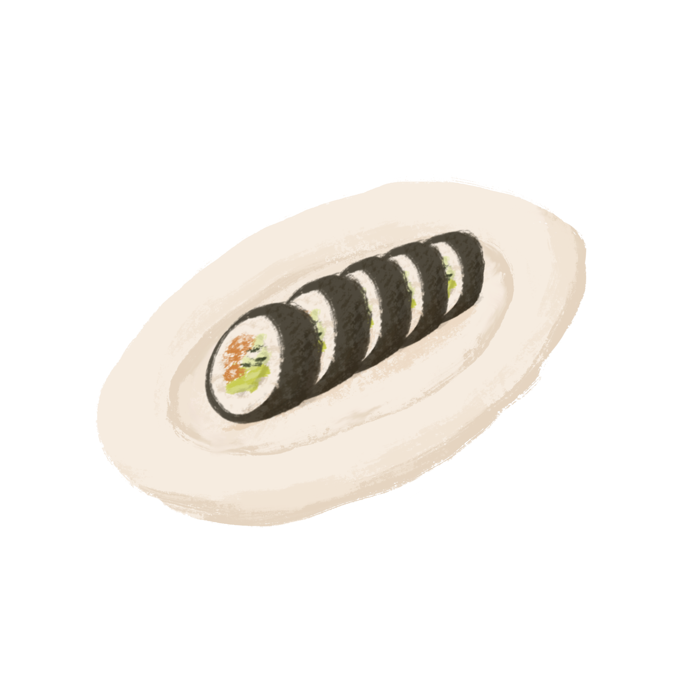
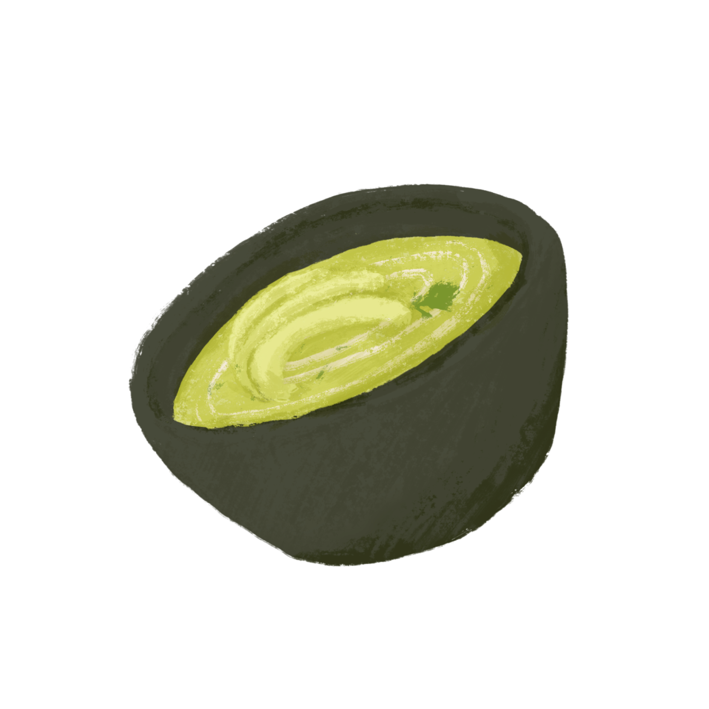

The simplest way to enjoy avocados. Sprinkle a pinch of salt and pepper, or other seasonings like
paprika, cayenne pepper, balsamic vinegar, or lemon juice onto the avocado.
Stuffed
There are plenty of stuffed avocado recipes to choose from, one way is top the avocado with crumbled,
cooked bacon and season it with spices like parsley, salt, and regular pepper.
In scrambled eggs
Simply by adding diced avocado to the eggs while they’re cooking in a pan.
Make sure to do this when the
eggs are halfway cooked to avoid burning the avocado.
On toast
Use avocado to substitute regular spreads like butter and margarine that adds extra vitamins and minerals
to the meal.

In sushi rolls
The avocado has a creamy mouthfeel and can be used to fill or top sushi rolls.
In guacamole
Can be made entirely with avocados, herbs, and seasonings, or can include other ingredients like corn,
pineapple, broccoli, and quinoa.
In salads
Since salads can be low in calories, adding avocados can make them a more filling meal.

In soups
Avocados can be used as the main ingredient to make avocado soup, or they can be added in chunks to other
soups.